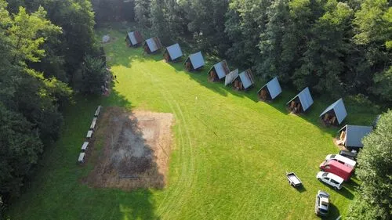

ZÁKLADNÍ INFORMACE
LOKACE: Rekreační středisko Spálený Mlýn, Rešice, 671 073 Rešice
DATUM: 7.7. – 18.7. 2025
CENA: 9900 Kč
PLATEBNÍ PODMÍNKY: Zálohu ve výši 3000 Kč zaplatit co nejdříve, nejpozději do konce dubna, na účet 2102247644/2010 a do poznámek pro příjemce dát jméno vašeho syna/dcery. Zbytek částky zaplatit do konce května. V případě platby celé částky v celku je splatnost do konce května.
CENA ZAHRNUJE:
- Ubytování v chatkách
- Zapůjčení AS zbraně a její servis, brýle nebo ochranná maska
- Střelivo 500ks kuliček/den
- Cestovní pojištění na úraz, nemoc
- Profesionální vedení výcviku a dalších aktivit
- Návštěva ostré střelnice, popřípadě vstup na další domluvená místa a aktivity (půjčení lodí, vstup do muzea atd.)
Organizace tábora navozuje atmosféru výcvikového střediska ozbrojených složek. Zahrnuje výcvik v oblastech bezpečné manipulace se zbraněmi, taktiku na úrovni jednotlivce až družstva, fyzický tréning, simulace bojové činnosti s airsoftovými zbraněmi a další hry a činnosti spadající především do branné oblasti.
VÝCVIK ZAHRNUJE
- Bezpečné manipulace se zbraněmi (airsoftovými)
- Nácviky a simulace bojových činností
- Základy přežití v přírodě
- Maskování
- Topografie a navigace v terénu
- Zvyšování fyzické kondice
- Práce v týmu i soběstačnosti
- Zdravotnická příprava
- Pořadová příprava
- Ženijní příprava
- Noční bojové hry
- Sebeobrana
- Sportovní hry, táborák a spousta další zábavy v kolektivu stejně zaměřených kamarádů a instruktorů
Organizaci military airsoft tábora zajišťují vyškolení vedoucí (absolventi Ped. F. MU Brno) a instruktoři s mnohaletými zkušenostmi z ozbrojených složek.
VÝKON ZBRANÍ
ÚTOČNÁ PUŠKA:
- do 1,7 J (130 m/s s 0,2 g)
DMR (puška pro přesnou střelbu)
- do 2,3 J (150 m/s s 0,2 g)
- pouze režim poloautomatické střelby
- optický zaměřovač s přiblížením (NE kolimátor!)
- pro blízkou střelbu nutnost záložní zbraně do max. výkonu 1,7 J
ODSTŘELOVACÍ PUŠKA
- do 3,3 J (180 m/s s 0.2 g)
- manuální natažení závěru
- optický zaměřovač s přiblížením (NE kolimátor!)
- pro blízkou střelbu nutnost záložní zbraně do max. výkonu 1.7 J
UBYTOVÁNÍ
CAMP: Spálený Mlýn
ADRESA: Rekreační středisko Spálený mlýn, Rešice, 67173 Rešice, GPS:49.0387689N,16.1445597E
Čtyřlůžkové chatky , splachovací toalety, sprchy, umývárny. Jídelna v pevné budově se stravováním z talířů. Sportoviště v areálu tábor (bazén).


CESTA
Vážení rodiče … z důvodu nevyužívané kapacity přepravy nebudeme již dále zřizovat autobusové spojení Brno Rosice, v případě nemožnosti dopravit dítě přímo na místo konání se na nás prosím obraťte a budeme řešit individuálně.
K DISPOZICI
Strava 5x denně, pitný režim, zapůjčení AS zbraní (samozřejmě je možné přivézt si i své vlastní) a nezbytných doplňků a ochranné masky, zásoba munice pro AS zbraně (možnost libovolně dokupovat střelivo na místě), povinné pojištění storno poplatku, úrazu, onemocnění,…
VÝBAVA
POVINNÁ VÝBAVA:
- Karta pojištěnce (převezmeme pouze kopii)
- Spací pytel
- Batoh na dvoudenní výlet (ne malý batůžek)
- Pevná obuv - kanady
- Sportovní obuv - tenisky
- Dostatek vojenského a sportovního oblečení
- Plavky
- Prádlo na spaní
- Oblečení pro chladné noci
- Nepromokavá bunda nebo pláštěnka
- Čepice/kšiltovka/klobouk
- Spodní prádlo a kvalitní ponožky
- Hygienické potřeby (mýdlo, kartáček, pasta a ručník)
- Repelent proti hmyzu
- Baterka (nejlépe s červeným filtrem)
- Láhev na pití (postačí i PET láhev)
- Sáček na špinavé prádlo
- Psací potřeby
- Kapesní nůž
- Vlastní označený hrníček
- Běžně užívané léky
DOPORUČENÁ VÝBAVA
- Hodinky
- Pantofle
- Vlastní airsoftová zbraň
- Vlastní střelivo
- Nosné vybavení jednotlivce (taktická vesta)
- Polní lopatka
- Pončo/celta
- Buzola
- Karimatka
- Ešus
ZAKÁZANÁ VÝBAVA
- Alkohol
- Cigarety a jiné návykové látky
- Šperky, notebooky a jiné cennosti
- S mobilním telefonem přijet táborník může, ale první den mu mobil bude odebrán a vrácen až předposlední den pro domluvu s rodiči na odjezd z tábora
KAPESNÉ
- Ve výši běžné útraty (pohledy, sladkosti, suvenýry…) a na zakoupení munice – JEDEN PLNÝ ZÁSOBNÍK NA DEN JE V CENĚ TÁBORA
V případě vlastního střeliva pro pořadatelem zajištěné zbraně nekupovat tržnicovou munici, ale kvalitní AS střelivo o váze 0,23/0,25g. Na úvod bude provedena selekce vlastního střeliva. Do vlastních zbraní možno používat libovolné střelivo
ZPĚT NA HLAVNÍ STRÁNKU